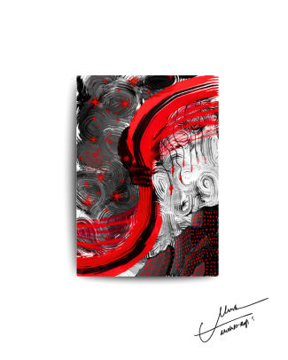
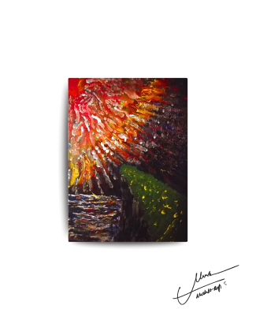

Mushab Aqil S
My name is Mushab Aqil Sulaeman, and you can call me Mushab.
I am a multidisciplinary learner with a strong interest in coding, art, photography, cinematography, and literature.
I enjoy exploring ideas, creating visual stories, and continuously developing my skills across both technical and creative fields. This portfolio represents my learning journey, projects, and experiments as I grow and refine my craft.
Resume
MUSHAB AQIL SULAEMAN
$ whoami Mushab Aqil Sulaeman — Data Science Student @ Telkom University · Creative Thinker · Self-Taught Learner
01 — CREATIVE DEVELOPMENT
PROJECT: PAINTING
class CreativeDevelopment:
def __init__(self):
self.medium = "Painting"
self.purpose = "Creative Exploration"
self.focus = [
"Visual Thinking",
"Observation",
"Expression",
"Experimentation"
]
def develop(self):
return "Turning ideas into visual forms."Overview
Lukisan menjadi salah satu media dalam mengembangkan kreativitas dan cara berpikir visual. Melalui proses mengamati, mengeksplorasi warna, menyusun komposisi, dan menuangkan gagasan ke dalam bentuk visual, proses melukis tidak hanya menjadi aktivitas artistik, tetapi juga menjadi latihan dalam memahami perspektif dan menciptakan sesuatu dari sebuah ide.
IDE │ OBSERVATION │ EXPLORATION │ EXPERIMENTATION │ VISUAL OUTPUT │ REFLECTION
Skills Developed
[+] Creativity
[+] Visual Observation
[+] Problem Solving
[+] Experimentation
[+] Attention to Detail
[+] Self Expression


02 — PROJECTS ARCHIVE
MODULE: CMS_PROJECTS
class ProjectArchive:
def __init__(self, source="cms-data.js"):
self.source = source
self.domains = ["Data Science", "Web Engineering", "Creative Art"]
self.display = "framed_gallery"
def load_works(self):
return cms.query("projects", sort="latest")Overview
Bagian ini menghimpun berbagai project yang telah saya bangun—mulai dari eksplorasi analisis data, pengembangan web, hingga eksperimen visual. Setiap karya disimpan secara terstruktur dalam sistem CMS Project dan dipamerkan layaknya koleksi galeri berbingkai agar proses, teknologi, dan hasil tiap project mudah ditelusuri.
CONCEPT │ ARCHITECTURE │ BUILD │ ITERATE │ SHOWCASE
03 — EDUCATION & EXPERIENCE
MODULE: CMS_EDUCATION_EXPERIENCE
student_journey = {
"name": "Mushab Aqil Sulaeman",
"role": "Data Science Student",
"university": "Telkom University",
"tracks": ["Pendidikan", "Pengalaman", "Self-Taught"]
}
timeline = cms.load("educationExperience", order="chronological")
print(timeline)Overview
Sebagai mahasiswa Data Science di Telkom University, saya mempelajari bagaimana data digunakan untuk memahami masalah, menemukan pola, dan mendukung pengambilan keputusan—mencakup matematika, statistika, algoritma, pemrograman, dan machine learning.
Di bawah ini tersusun runtutan pendidikan dan pengalaman saya secara kronologis melalui CMS Pengalaman & Pendidikan, menggambarkan bagaimana fondasi akademik bertemu dengan praktik nyata dan eksplorasi mandiri.
MATHEMATICS │ STATISTICS │ PROGRAMMING │ DATA ANALYSIS │ MACHINE LEARNING
Current Learning Stack
learning = [
"Python", "Statistics", "Mathematics",
"Algorithms", "Data Analysis", "SQL", "Machine Learning"
]04 — SELF-TAUGHT DEVELOPMENT
SYSTEM: AUTODIDACTIC LEARNING
class SelfTaughtSystem:
def learn(self, problem):
problem = self.identify(problem)
knowledge = self.research(problem)
practice = self.experiment(knowledge)
result = self.evaluate(practice)
return resultPhilosophy
Kemampuan belajar secara otodidak dibangun melalui rasa ingin tahu, eksplorasi, dan keberanian untuk mencoba sesuatu yang belum dipahami.
Bagi saya, belajar bukan hanya menerima informasi, tetapi memahami bagaimana sesuatu bekerja, mencoba menerapkannya, menemukan kesalahan, kemudian memperbaikinya.
$ learn --mode=self-taught > encounter_problem > search_information > understand_concept > build_experiment > make_mistakes > analyze > improve > repeat
CORE PRINCIPLES
principles = {
"creativity": "Create before judging.",
"learning": "Understand before memorizing.",
"failure": "Treat mistakes as data.",
"growth": "Improve through iteration.",
"curiosity": "Keep asking why."
}CURRENT VERSION
MUSHAB_AQIL_SULAEMAN
$ git status On branch: self-development modified: creativity knowledge programming analytical_thinking untracked: new_ideas new_projects new_questions nothing is finished.
Learn. Create. Analyze. Iterate.